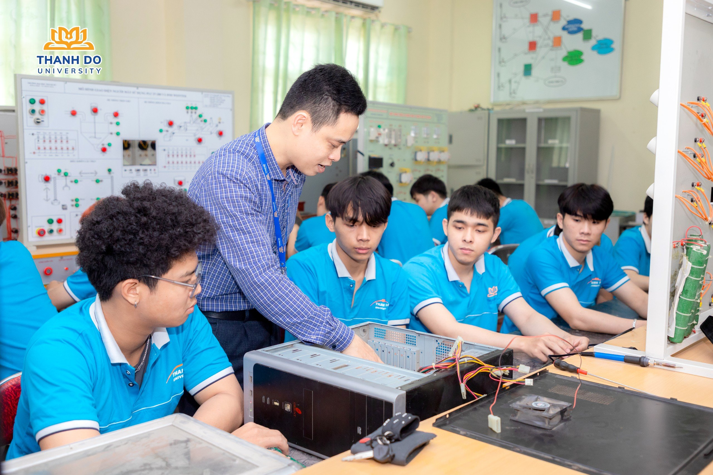
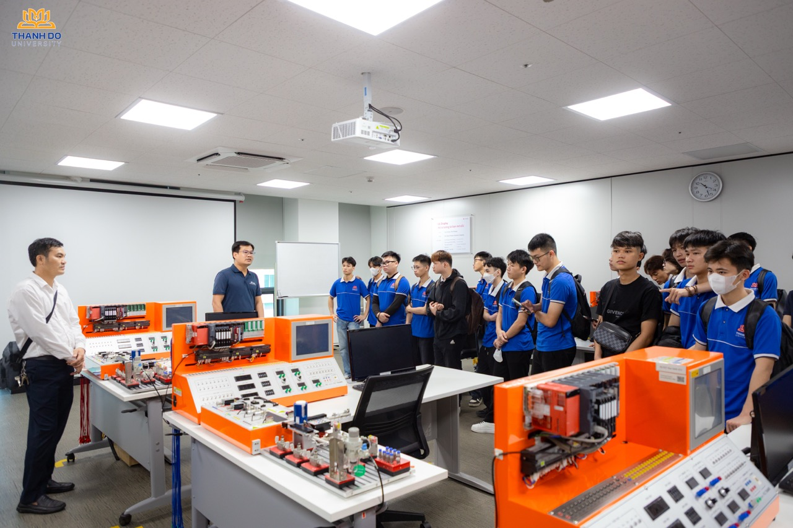
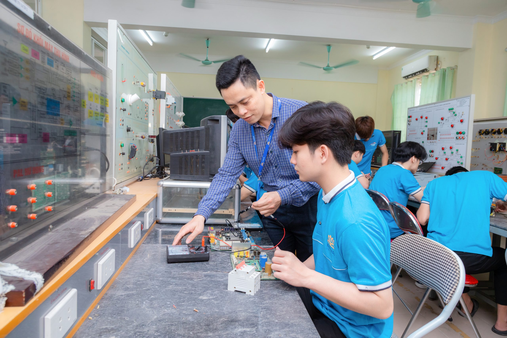
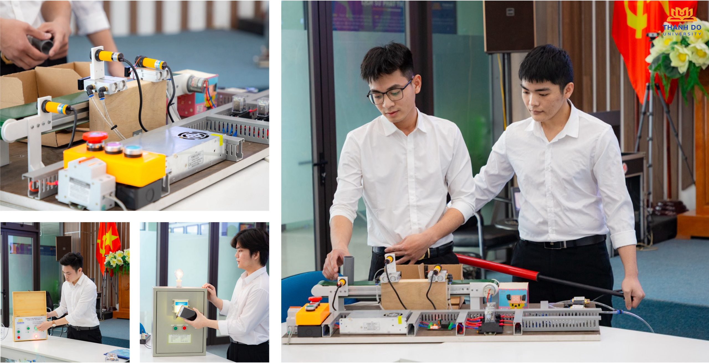

Công nghệ Kỹ thuật Điện - Điện tử
Tổng quan
Nghiên cứu và ứng dụng các vấn đề liên quan đến điện, điện tử và điện từ với nhiều chuyên ngành nhỏ như năng lượng, điện tử học, hệ thống điều khiển, xử lý tín hiệu, viễn thông, ngành kỹ thuật điện – điện tử là ngành kỹ thuật mũi nhọn, hiện đại, được ứng dụng rộng rãi trong mọi lĩnh vực của sản xuất và đời sống.
- Mã ngành: 7510301
- Định hướng đào tạo: Công nghệ bán dẫn
- Thời gian đào tạo: Tùy thuộc vào đối tượng đầu vào (Trung cấp, Cao đẳng, Đại học)
- Trình độ đào tạo: Cử nhân
- Học phí: 370.000 đồng/1 tín chỉ

Chương trình đào tạo
Tổng số tín chỉ của chương trình đào tạo (Chưa tính các học phần Giáo dục thể chất, Giáo dục Quốc phòng – An ninh, tiếng Anh chuẩn đầu ra): 150 tín chỉ
- Kiến thức giáo dục đại cương: 42 tín chỉ
- Kiến thức giáo dục chuyên nghiệp: 83 tín chỉ
- Học kỳ doanh nghiệp: 18 tín chỉ
- Đồ án tốt nghiệp/Các học phần thay thế ĐATN: 7 tín chỉ
Bản mô tả chi tiết chương trình đào tạo: Xem tại đây

Triển vọng nghề nghiệp
Sinh viên tốt nghiệp ngành Công nghệ kỹ thuật điện, điện tử có thể làm việc trong các lĩnh vực sau:
- Lĩnh vực điện lực: thiết kế, thi công, lắp đặt, vận hành, bảo trì hệ thống điện, hệ thống truyền tải, phân phối, cung cấp điện.
- Lĩnh vực điện tử: thiết kế, chế tạo, lắp ráp, sửa chữa, bảo trì các thiết bị điện tử, điện gia dụng, thiết bị viễn thông, thiết bị đo lường, điều khiển, tự động hóa.
- Lĩnh vực năng lượng: nghiên cứu, phát triển, ứng dụng các công nghệ năng lượng mới, năng lượng sạch, năng lượng tái tạo.
- Lĩnh vực công nghệ thông tin: thiết kế, phát triển phần mềm, hệ thống điện tử, mạng máy tính.
- Lĩnh vực y tế: thiết kế, chế tạo, lắp ráp, vận hành các thiết bị y tế điện tử, điện sinh học.
- Lĩnh vực quốc phòng: nghiên cứu, phát triển, sản xuất các thiết bị điện tử, điện tử quân sự.

